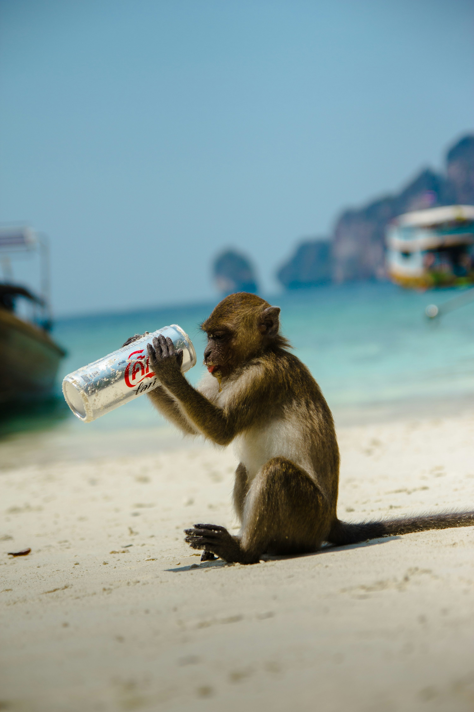

Aber og truisme
Gennem årene er turismen i Thailand steget og dette har betydet at flere tager ud til junglen for at fodre aberne eller få taget billeder med dem. Dette har dog haft konsekvenser for turister og ikke mindst de lokale som bor i områderne.
Aggressive og afhængig af menneskemad
Aberne har gennem årene mistet en naturlig frygt for mennesker som mange mennesker ser det sjove og hyggelige i men det har været med til at skabe en ubalance i økosystemet. Der har været flere hændelser hvor aberne har udvist aggressiv adfærd mod mennesker. Dette skyldes primært at de er blevet vant til at blive fodret af mennesker og derfor nu er blevet afhængige af mennesker for at få menneskemad og overleve. Dette blev problem kom specielt i fokus under covid epidemien hvor aberne terroriserede de nærliggende landsbyer da de sultede og ville sjæle mad fra de lokale. Abe populationen er også faldet dristigt under og efter nedlukningerne da flere døde af sult.
Sygdomsspredning og overpopulation
Grundet den tætte kontakt som er kommet mellem aber og mennesker de seneste par år er der sket øget smittespredning da aberne bærer på forskellige sygdomme og gennem den fysiske kontakt spreder det til mennesker som bl.a. herpesvirus og simian foamy virus har undersøgelser vist. Man har i nogen provinser blevet nødt til at indfører steriliserings programmer for at håndtere overpopulation af aber. En stigning i population skyldes at aberne konstant har mad til rådighed og flere ab unger overlever de ellers normale begrænset adgang til mad.
